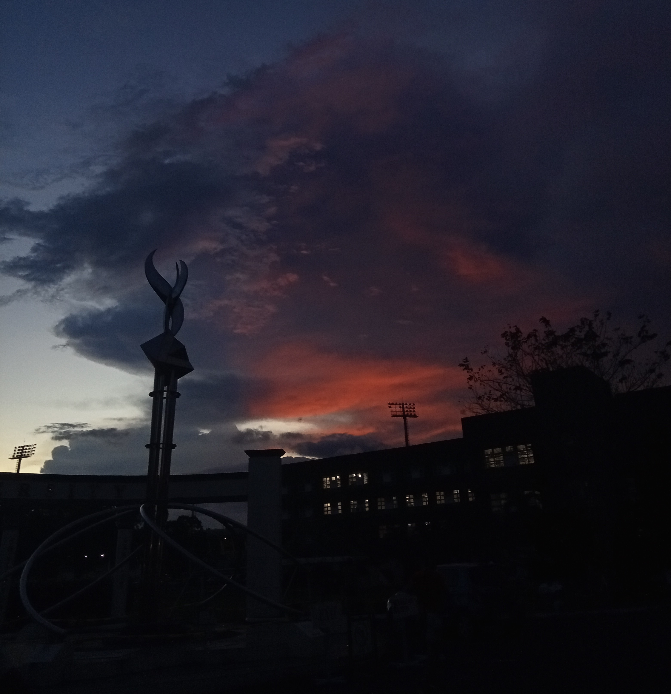

← All Posts
Joyce Llorera
August 19, 2026

Between Dreams and Doubts
Sometimes, getting what we want does not mean we will always feel confident about the path we chose. We may spend years working toward something, only to reach a point where we start questioning whether we are really capable of achieving it. That is how I feel now as I prepare to start my third year as a BSIT student.
Since high school, I have been vocal about what I wanted to pursue in college. I wanted to take a computer-related course, and I got what I wanted. But now, I am having second thoughts about the path I chose. As I prepare to start my first semester as a third-year BSIT student, I find myself becoming anxious about my journey. Yes, I've come this far, but would I really make it to the end?
The pressure of being an IT student makes me question myself. Am I good enough to achieve my goal and be successful? I know how hard it is to get employed in the IT industry. I've seen other IT graduates struggling to find jobs because of the large competition and the increasing use of AI. With more work relying on AI technologies, I sometimes worry about the job opportunities available for IT graduates. Since I know that I'm not really good at coding and can easily feel overwhelmed by other people and AI, I am slowly doubting myself. Will I ever get a job after graduating?
I am doing my best, but sometimes, my best feels like someone else's average work. People around me expect that I will be able to work after graduation. That makes me nervous and pressured. I don't want to disappoint them, and I especially don't want to disappoint myself. I dream high, and I don't want to fall behind. The future is unpredictable, and I still don't know where this path will take me. But maybe I don't need to have all the answers right now. I just need to keep learning, keep trying, and trust that the effort I am putting in today will eventually lead me somewhere. I may still be uncertain about whether I can make it to the end, but I hope that someday, I will look back at this moment and realize that I was capable all along.
Read More

Scenery
February 24, 2026

Dream Careers
August 05, 2026